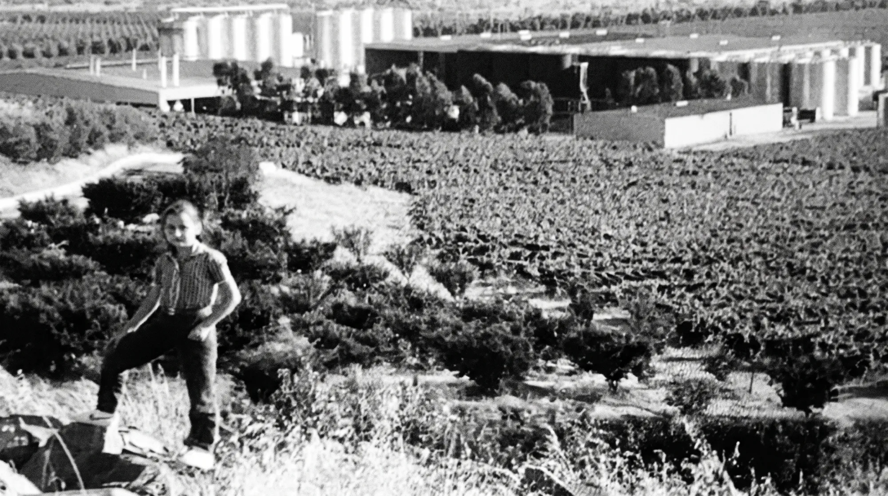
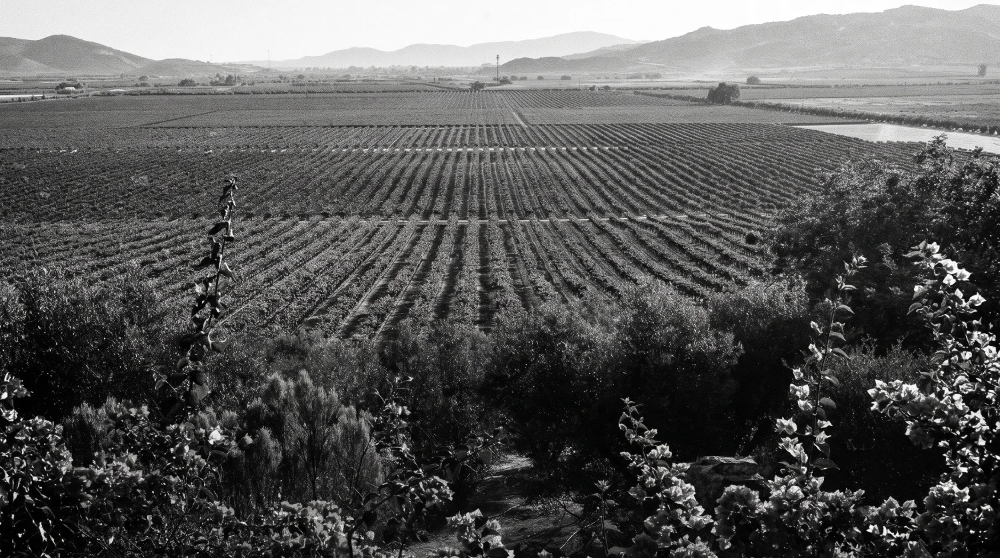
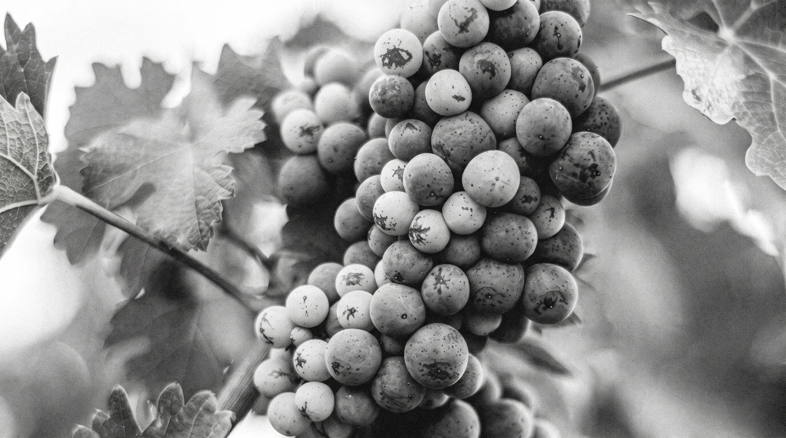
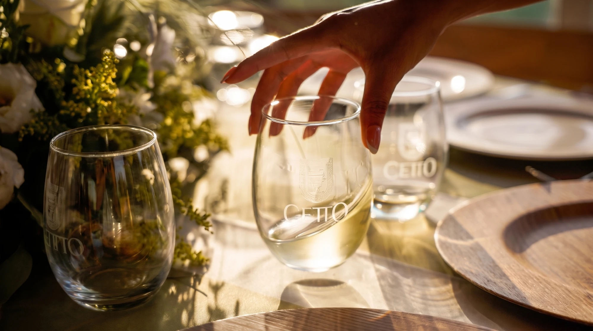

1924
Con 24 años, Ángelo Cetto dejó Selva di Levico, en el norte de Italia, y cruzó a México con el oficio de su familia. Cuatro años después fundó en Baja California la bodega que hoy lleva su nombre.
Más de mil reconocimientos internacionales para la familia. Ver la Colección Premiada
Aquí cultiva sus viñedos la familia Cetto desde 1928: 1,200 hectáreas, 90 de ellas orgánicas certificadas.
Elige el tamaño, escoge tus vinos y te descontamos el 10%. Tu caja ya lleva envío gratis.
10% de descuento y envío gratis en las dos.
¿No sabes cuál elegir?
Tu caja de 6
Catas, recorridos por el viñedo y la bodega en el Valle de Guadalupe. Reservas en línea.
Con 24 años, Ángelo Cetto dejó Selva di Levico, en el norte de Italia, y cruzó a México con el oficio de su familia. Cuatro años después fundó en Baja California la bodega que hoy lleva su nombre.


Su hijo Luis Agustín amplió los viñedos en el Valle de Guadalupe. Probó variedades, suelos, climas y formas de plantar. Desde entonces, el Valle es la casa de la familia.

hectáreas de viñedo, 90 de ellas orgánicas certificadas.

Cien años después, la séptima generación sigue en la tierra que eligió Ángelo.
Conoce nuestra historiaEstuches listos para regalar, tarjeta con tu mensaje y envío a todo México. Para empresas cotizamos volumen.

Crear tu cuenta es gratis y el precio de socio aplica desde tu primera compra.
“Lo que empezó en una montaña de Trento hoy se sirve en más de veinte países. Siete generaciones después, seguimos siendo una familia que hace vino.”
Familia Cetto · Valle de Guadalupe, desde 1928